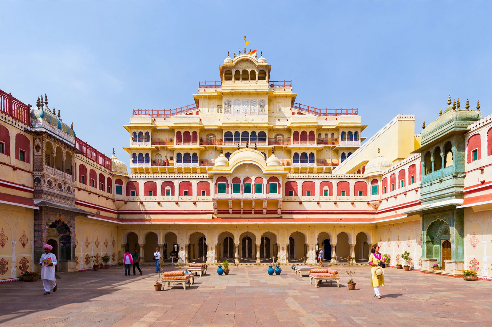

| City Palace, Jaipur | |
|---|---|
 | |
| Location | Jaipur, Rajasthan, India |
| Built | 1729–1732; later additions |
| Built for | Maharaja Sawai Jai Singh II |
| Architect | Vidyadhar Bhattacharya; later Samuel Swinton Jacob |
| Architectural styles | Rajput, Mughal, European |
The City Palace, Jaipur is a royal residence and former administrative headquarters of the rulers of the Jaipur State in Jaipur, Rajasthan. Constructed from 1729 to 1732, initially by Sawai Jai Singh II, the ruler of Amber, it was planned and built largely by the architect Vidyadhar Bhattacharya. Later rulers made additions to the complex, and some of its buildings date into the 20th century. It is the seat of the titular Maharaja of Jaipur.
When Jai Singh II founded the new planned city of Jaipur in 1727, shifting his capital from Amber, the City Palace was laid out at the heart of the walled city. Successive maharajas enlarged the palace: Sawai Man Singh II added and remodelled portions, and the complex today is administered by a trust for the royal family, part of it operating as a museum.
The complex occupies roughly one-seventh of the area of the old city and blends Rajput, Mughal and European elements. Its best-known structures include the Chandra Mahal, the seven-storeyed residence of the royal family; the Mubarak Mahal ("Auspicious Palace"), built by Maharaja Madho Singh II in the late 19th century and now a museum; the Pitam Niwas Chowk, a courtyard with four exquisitely painted doorways representing the four seasons and Hindu deities; the Diwan-i-Khas, with two enormous silver vessels; and the Govind Dev Ji Temple, dedicated to Lord Krishna.
The two giant sterling-silver vessels in the Diwan-i-Khas, each about 1.6 metres high and holding some 4,000 litres, are listed in the Guinness Book of World Records as the largest silver objects in the world. They were made for Madho Singh II's journey to England in 1902 to carry Ganges water. The palace museum holds royal costumes, textiles, weaponry, manuscripts and miniature paintings. About one-third of the complex's land is covered by the palace buildings and gardens.